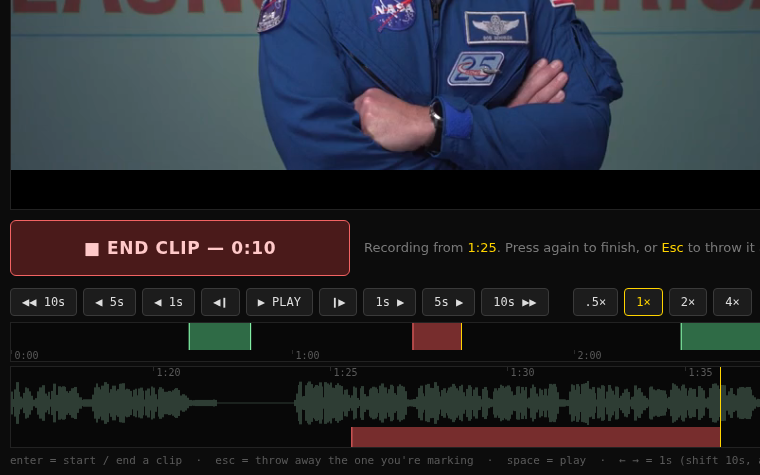
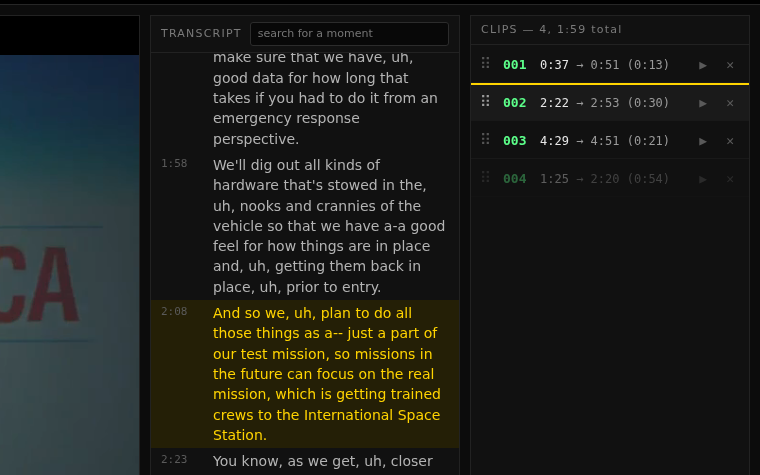
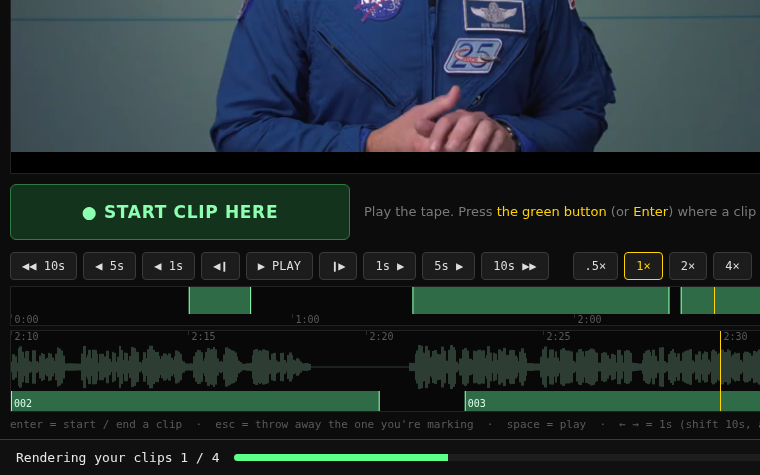

ONE BUTTON · ANY BROWSER · PYTHON + FFMPEG
Watch a small copy of the tape in your browser. Press one button where a clip starts and again where it ends. The cutting happens back where the tape lives, from the full-quality file.
This is the real editor, running in your browser. Press ▶ PLAY, then the green button twice to cut a clip. Drag a clip up or down to reorder it. Drag along either timeline strip to scrub. Nothing is uploaded, and SUBMIT is a pretend run here because a web page cannot cut video. Open it full-screen ↗
WHY IT EXISTS
This started with a documentary: a stack of interviews, each one a single take about an hour long, sitting on a machine at home. The job was to watch them and pull out the good moments, often from somewhere else.
The connection could not carry it. Every jump along the timeline had to download megabytes before a picture appeared, and plain playback kept freezing. A normal video editor needs the whole file in front of it; that was never going to arrive.
Two small things fixed it:
HOW LONG ONE JUMP TAKES
| Ordinary copy | Low copy | |
|---|---|---|
| One jump at 2 Mbps | 1.5 to 8.8 s (average 6.2) | 0.7 to 0.9 s |
| One jump at 1 Mbps | 2.9 to 17.6 s (average 12.2) | 1.4 to 1.7 s |
| 30 s of watching at 2 Mbps | got through 11.6 s of tape | all 30 s |
| 30 s of watching at 1 Mbps | got through 3.8 s of tape | all 30 s |
The slider scales those averages (about 12.3 megabits per jump against 1.6). It is a calculator, not a promise.
HOW IT WORKS

Play the tape. Press the green button (or Enter) where a clip should start. It turns red and counts. Press it again where the clip should end.

Each clip lands in a numbered list. Drag one to reorder, ▶ plays just that clip, ✕ drops it, Ctrl+Z undoes. Clips can overlap and be any length.

The server cuts every clip out of the full-quality tape with ffmpeg, as numbered files with a plain-text list of what each one is. The low copy is only ever for watching.
RUN IT YOURSELF
git clone https://github.com/pingywon/lowband-clipper
cd lowband-clipper
# once per tape: make its small viewing copy
python3 clipper.py low ~/tapes/interview.mp4
# serve the folder, then open http://127.0.0.1:8765/
python3 clipper.py ~/tapesPut a .srt, .vtt or .json transcript with the same name next to a tape and it becomes a searchable, clickable panel. To reach the editor from another computer, add --bind 0.0.0.0. There is no login, so only do that on a network you trust.